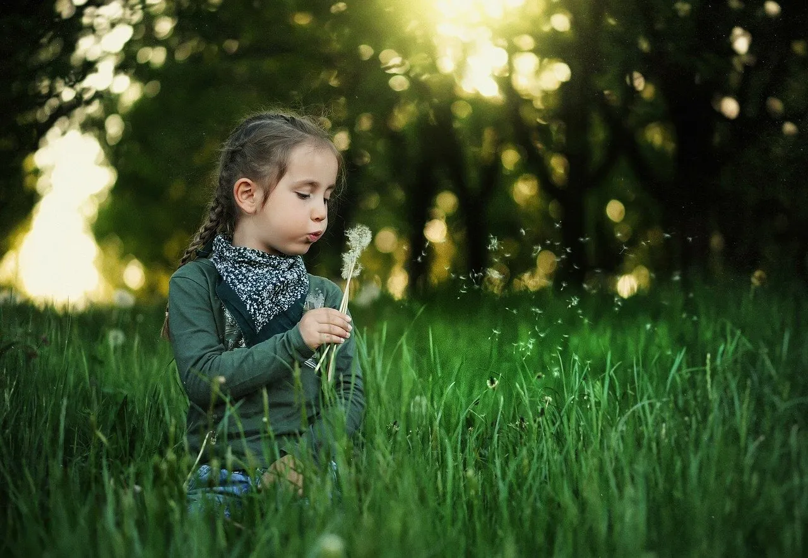

Qué mejor manera de compartir tiempo en familia que haciendo Yoga y la experiencia es insuperable si es realizando ejercicios de respiración, uno de los aspectos más importantes de esta disciplina. Aquí te mostramos 4 entretenidos ejercicios para practicar la respiración yogui con los más pequeños de la casa.
Respiración del elefante
A casi todos los niños les encantan los elefantes, y si tienen que imitarlos será aún mejor, como en este ejercicio de Yoga, solo hay que seguir las siguientes indicaciones:
Poner a los niños de pie y que abran mucho las piernas.
- Luego de esto, coméntales que van a convertirse en elefantes; así que deben respirar como ellos.
- Los niños deben inspirar profundo por la nariz, al mismo tiempo que levantan los brazos, como si estos fueran la trompa del elefante; a su vez, deben intentar que el abdomen se infle.
- Posterior a todos estos pasos, los niños deben exhalar, pero haciéndolo por la boca de forma que se oiga, bajando los brazos e inclinándose como si fuera la trompa del elefante.
Respiración de la flor
Este ejercicio yogui es uno de los más indicados para introducir a los niños en la respiración yóguica porque es muy entretenido e involucra varios sentidos como el olfato y la vista; además, ¿a qué niño no le gustan las flores? Solo debes hacer lo siguiente:
- Elige una flor de tu casa o de un parque cercano. Se recomienda una flor que tenga fragancia y que sea de colores llamativo; así como también, que sea rara.
- Indícales a los niños que se acerquen a la flor y que respiren hondo para olerla, todo lo que puedan, luego deben expulsar el aire por la boca.
- En una próxima oportunidad, pídeles que mantengan la respiración por unos pocos segundos (esto dependiendo de la edad). Con el tiempo, aprenderán que la expulsión de aire por la boca se hace con lentitud.
También es posible realizar este ejercicio con un remolino de papel que se puede crear junto a nuestros niños y niñas en casa.
Respiración de la serpiente
Este es otro ejercicio de respiración yóguica que tus hijos amarán porque es de lo más divertido, solo se deben seguir las siguientes instrucciones:
- Hay que sentar a los niños en una silla, indicándoles que deben permanecer con la espalda recta.
- A continuación, los niños deben poner sus manos en el abdomen y concentrarse en las instrucciones que les des.
- Posteriormente, deben agarrar aire y sostenerlo por cuatro segundos.
- Por último, deben soltar el aire mientras imitan el sonido de la serpiente.
La respiración del Leopardo
El Leopardo es el ejercicio de respiración más completo, pero también es muy divertido y eficaz para practicar la respiración diafragmática. Para realizarlo, hay que seguir los siguientes pasos:
- Pediremos a los niños que se pongan en el suelo, a cuatro patas, como si fueran un Leopardo.
- A continuación, los niños deben tomar aire por la nariz y prestar atención a cómo se infla sus abdómenes y desciende la columna vertebral.
- Por último, deben expulsar el aire por la boca y observar como el abdomen desciende y la espalda se eleva levemente.
Un punto importante a considerar es que no se tiene que forzar a los niños a practicar estos ejercicios; debes estimularlos a hacerlos sin tener que obligarlos y la mejor forma es con ejemplo, viendo a sus padres y representantes practicando Yoga y siguiendo un estilo de vida saludable.